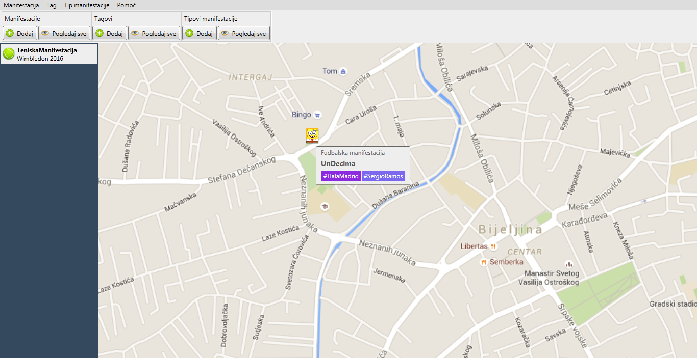
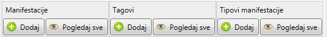
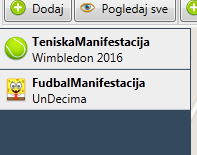
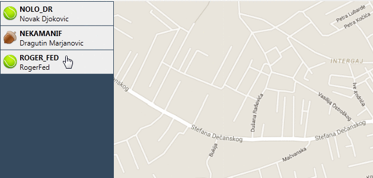

Aplikacija se bavi vođenjem evidencije o manifestacijama u jednom gradu.
Manifestacija posjeduje tip manifestacije i posjeduje više tagova kojima je označena.
O aplikaciji
Aplikacija je namijenjena korisnicima koji su upoznati sa radom na računaru.
Kako je namijenena za veliki broj unosa, prečice su izuzetno bitne i biće navedene u sljedećoj sekciji.
Pošto ne mora da važi da su korisnici domenski stručnjaci, za svaku formu obezbijeđen je jedan nivo pomoći.
Na slici 1. je prikazan glavni prozor aplikacije.

Slika 1. Glavni prozor aplikacije
Prečice
Aplikacija posjeduje 8 najosnovnijih prečica: Ctrl + M služi za dodavanje nove manifestacije.
Ctrl + Shift + M služi za pregledanje svih manifestacija.
Ctrl + T služi za dodavanje novog taga.
Ctrl + Shift + T služi za pregledanje svih tagova.
Ctrl + C služi za dodavanje novog tipa manifestacije.
Ctrl + Shift + C služi za pregledanje svih tipova manifestacija.
F1 služi za pokretanje dokumentacije u zavisnosti od konteksta.
F5 služi za pokretanje i zaustavljanje demo moda.
Demo mod
Kako korisnik nije upoznat sa domenom, a uglanvnom se bavi unošenjem velike količine podataka, za shodno je uzeto da se
korisniku pokaže primjer unosa manifestacije.
Demo mod se pokreće iz glavnog prozora klikom na dugme F5 ili menijem Pomoć > Demo mod.
Korisniku je u svakom trenutku dozvoljeno da pauzira ili nastavi demo takođe klikom na dugme dugme F5.
Linija alatki
Zbog čestog unosa podataka, željeli smo da Vam opcija za pregled i dodavanje svih entiteta uvijek bude na oku!
Na slici 2. izdvojen je toolbar.

Slika 2. Prikaz toolbar-a
Možemo primijetiti da je podijeljen u tri sekcije:
Manifestacije - dva dugmeta koja su grupisana u ovom regionu služe za dodavanje i pregled istih.
Tagovi - dva dugmeta koja su grupisana u ovom regionu služe za dodavanje i pregled istih.
Tipovi manifestacija - dva dugmeta koja su grupisana u ovom regionu služe za dodavanje i pregled istih.
Prikaz manifestacija za prevlačenje
Na slici 3. izdvojen je prikaz manifestacija za prevlačenje.

Slika 3. Prikaz manifestacija za prevlačenje
Odmah ispod linije alatki, a sa lijeve strane radne površine na kojoj je prikazana mapa, nalazi se lista manifestacija koje treba da
budu raspoređene na radnu površinu.
Korisniku je olakšano raspoznavanje o kojoj manifestaciji se radi jer je kraj ikonice manifestacije prikazan i tip manifestacije
i naziv manifestacije.
Drag and Drop
Prenos manifestacija se vrši direktnom manipulacijom. Prevlačenjem manifestacije iz panela na radnu površinu definišete
poziciju manifestacije na mapi.

Pored prikaza direktne manipulacije, primijetimo da postoji tooltip u kom se prikazuju osnovni podaci o manifestaciji - tip, naziv i tagovi.
Takođe, desnim klikom miša se korisniku pojavljuje kontekstni meni sa opcijama detaljnog prikaza, izmjene manifestacije i uklanjanja sa mape.
Pogledajte još...
Preporučujemo Vam da pročitate i ostatak dokumentacije vezane za aplikaciju.